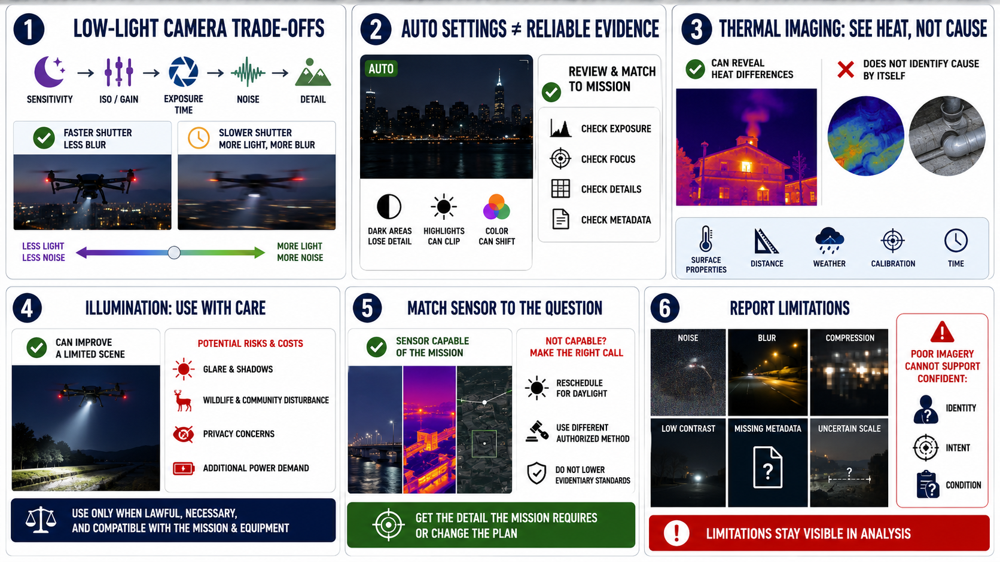

Sensors and Image Quality
Connecting to LMS... Progress: in progress

Narration
Low-light cameras must trade among sensitivity, exposure time, noise, motion blur, and detail. Increasing ISO or electronic gain can brighten an image while amplifying noise. A slower shutter can gather more light but blur moving subjects and aircraft motion.
Automatic camera settings may produce an attractive preview that lacks reliable evidence. Dark areas can lose detail, highlights can clip, and color can shift. Review a sample and match settings to the mission rather than assuming brightness equals quality.
Thermal imaging can reveal heat differences under suitable conditions, but it does not see through every material or identify cause by itself. Surface properties, distance, weather, calibration, and time influence apparent temperature.
Spotlights or illumination can improve a limited scene but may create glare, shadows, wildlife or community disturbance, privacy concerns, and additional power demand. Use only when lawful, necessary, and compatible with the mission and equipment.
Match sensor capability to the question. If the mission requires detail the payload cannot capture reliably at night, reschedule for daylight or use a different authorized method. Do not lower evidentiary standards because the flight was difficult.
Report image limitations. Noise, blur, compression, low contrast, missing metadata, and uncertain scale should remain visible in analysis. Poor imagery cannot support confident identity, intent, or condition judgments.